Suppose I asked you to invent a way for a machine to paint a brand-new picture from nothing. You would probably try to teach it to draw — to lay down strokes, build up shapes, add detail. You almost certainly would not say: "First, let's teach it to take a finished painting and slowly smear it into meaningless static."
And yet that backwards-sounding idea is exactly how nearly every AI image, video, and increasingly even AI text is now created. It's called diffusion, and the first time it clicks, it feels like a magic trick. The plan is this: take real things, destroy them gently and gradually into noise, learn to undo that destruction one tiny step at a time — and then, starting from pure noise, run the undo until something new walks out.
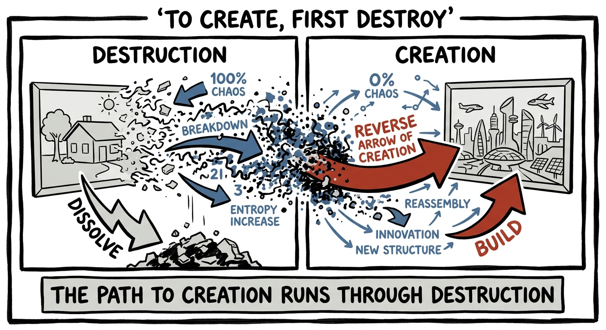
Start with the easy, almost silly part. Take a clear photograph and add a tiny sprinkle of random noise — barely visible. Now add a little more. And more. Keep going, dozens or hundreds of times, and the picture dissolves: first grainy, then murky, then gone entirely, until you're staring at a screen of pure television static with no trace of the original.
This "forward process" is trivial — anyone can corrupt an image; it takes no intelligence at all. But it has one priceless property: at every single step, you know exactly what noise you added. You destroyed the picture, but you kept the receipts.
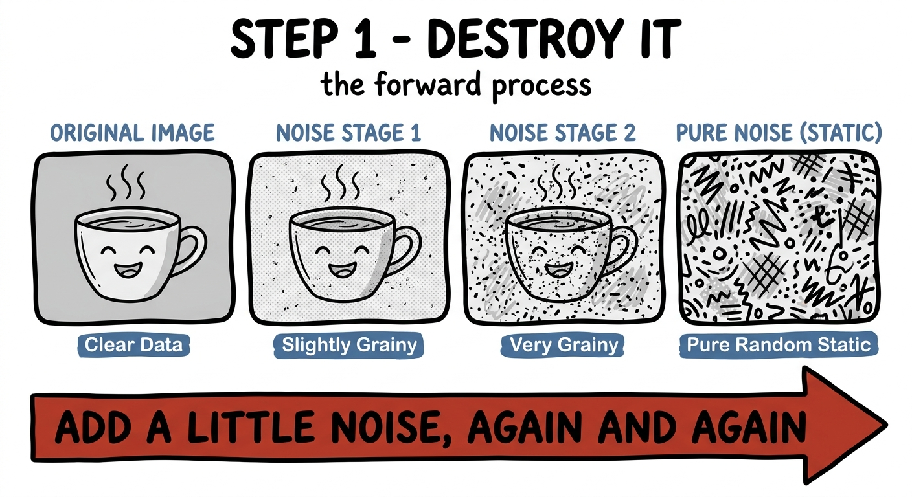
Now the only part that requires learning. Show a network a slightly-noisy image and ask it a single, narrow question: what noise was just added? Because you kept the receipts, you can grade its answer perfectly. Subtract the noise it predicts, and you get a slightly cleaner image back.
That's the whole training task — not "paint a masterpiece," just "undo one small smudge." It's a question so easy that a model can get genuinely good at it. And here's the quiet leap: a model that can reliably remove a little noise can be run over and over to remove a lot.
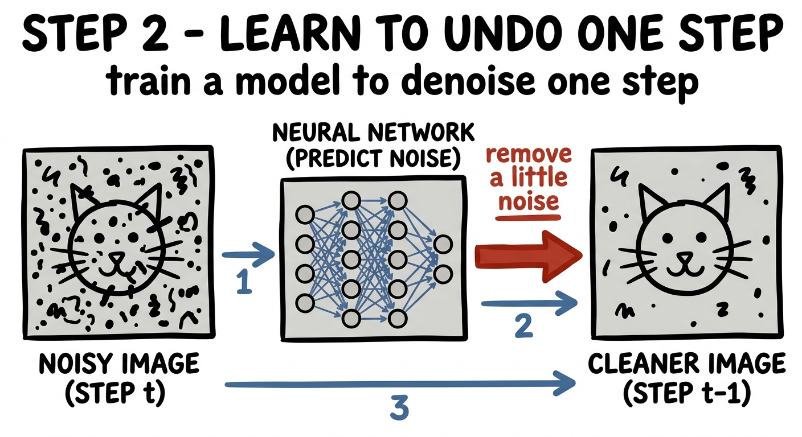
So do the audacious thing. Don't start with a photo at all. Start with a fresh screen of pure random static — noise that was never a picture of anything — and ask the model the only question it knows: "what noise should I remove?" Take its answer, subtract it, and you have something very slightly less random. Ask again. And again. A few dozen steps later, a coherent, brand-new image you have never seen resolves out of the chaos.
Drag the slider. On the left is pure static; pull toward the right and watch a picture you never drew assemble itself out of the noise — which is, almost exactly, what the model does step by step:
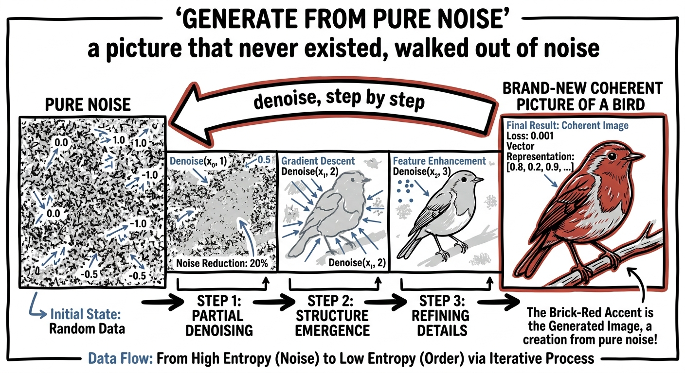
Step back and notice the sleight of hand. "Generate a beautiful image from nothing" is a monstrously hard problem — too hard to attack head-on. But "remove a little noise" is easy. Diffusion's whole genius is that it shatters the impossible problem into thousands of trivial ones, and chains them. No single step is clever. The cleverness is in the chain.
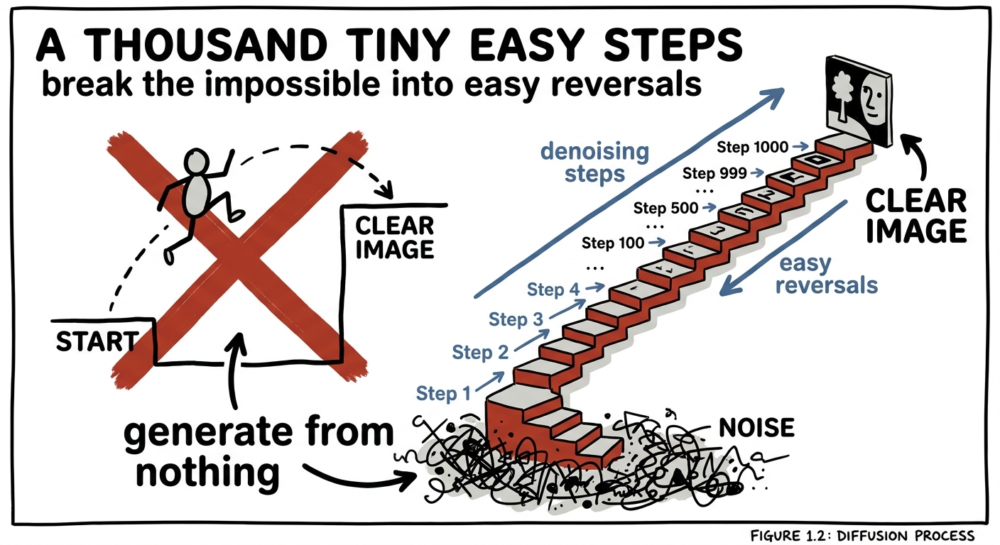
There's an old line attributed to Michelangelo: the statue was already inside the marble; he just removed everything that wasn't it. Diffusion is exactly that, made mechanical. The image was always hiding in the noise, in the sense that some picture is consistent with any starting static — and the model's job is just to keep carving away what isn't it. (The idea, by the way, was borrowed from physics — the gentle spreading of particles, "diffusion" — by Sohl-Dickstein and colleagues in 2015, and made to sing for images by Ho and colleagues in 2020.)
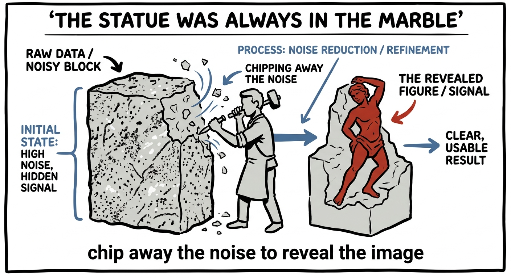
This isn't a toy. Stable Diffusion, Midjourney, DALL·E, Imagen — every one of those tools that paints from a text prompt is, under the hood, doing exactly this: starting from noise and denoising its way to a picture, gently steered at each step by your words. (And remember Lecture 5 — the cleverest versions do all this denoising inside a compressed latent space, so expressivity and compression and reversal all stack together.)
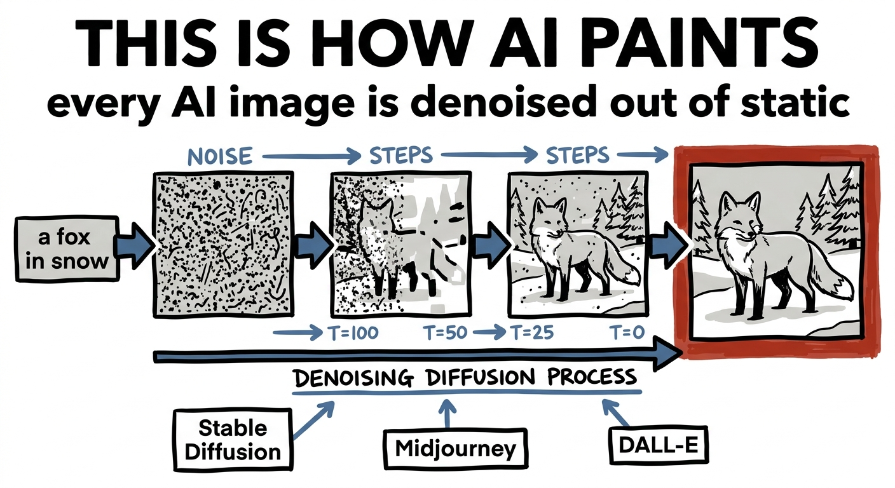
Here is where it gets genuinely surprising. Almost every language model you've used writes the way you'd expect — left to right, one word at a time, each token committed before the next is chosen. It's called autoregressive, and it's sequential by nature: to write the hundredth word, you must first write the ninety-nine before it.
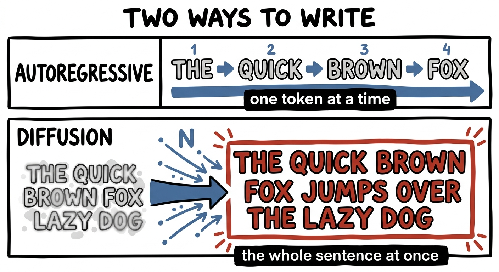
Diffusion says: why one at a time? Corrupt a sentence not with blur but by masking — replace words with blanks until the whole thing is gibberish — and train a model to fill them all back in. Then generate by starting with a sentence that is entirely blanks and refining the whole thing at once, over a few passes: a rough draft of every word simultaneously, then sharper, then sharper, like a Polaroid developing. The sentence comes into focus all at once instead of crawling out word by word.
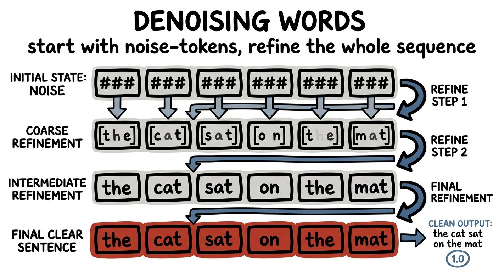
This is exactly what diffusion language models like Mercury (from Inception Labs) and the open LLaDA do — and because they generate every token in parallel rather than one-by-one, they can be several times faster than a normal LLM at the same quality. The same destroy-and-reverse trick that paints foxes now writes paragraphs. Whoever first looked at a left-to-right model and thought "what if a sentence could develop like a photograph instead" deserves a great deal of credit.
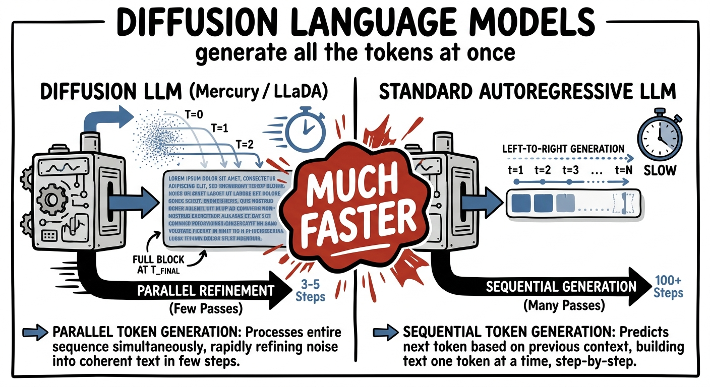
Once you have the trick, it spreads everywhere, because almost everything can be corrupted and un-corrupted. Video: denoise across space and time at once, and a whole clip emerges from spacetime static — this is the engine behind Sora-style video models. Audio: denoise a sound into music or speech. And most strikingly, molecules: scatter atoms at random and denoise them into a valid, structured protein or drug candidate — diffusion is now a serious tool in designing new medicines.
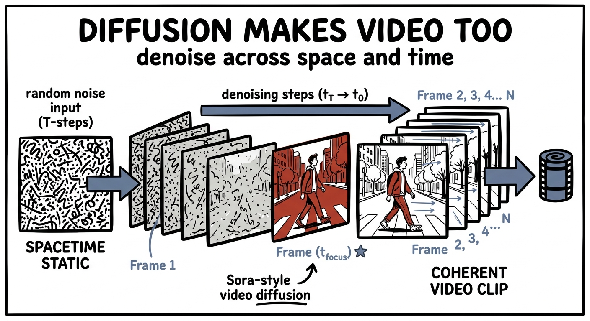
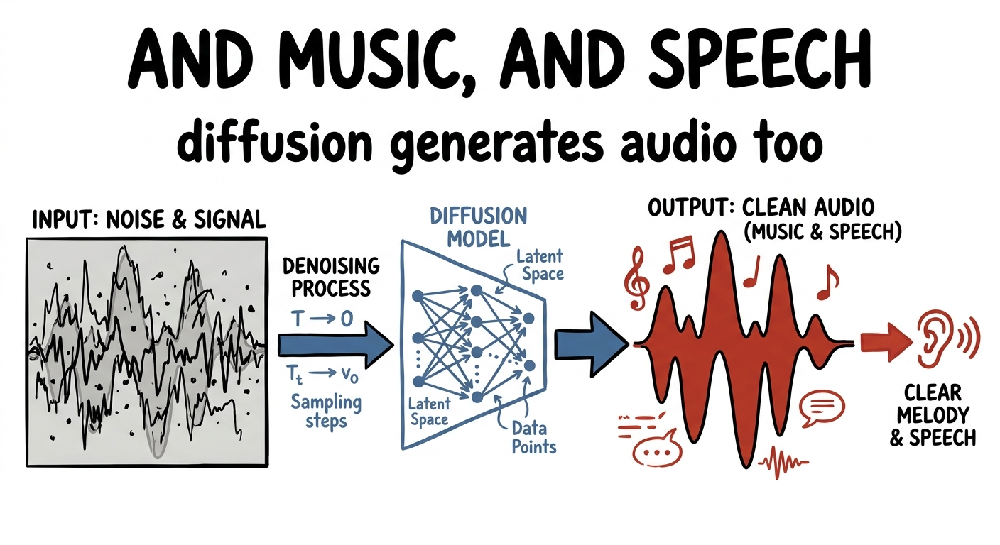
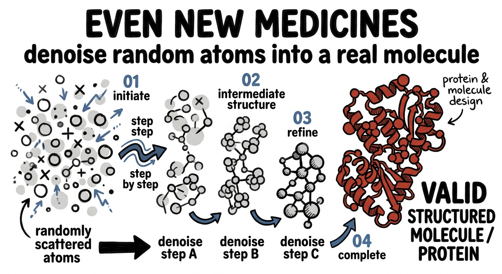
Image, text, video, audio, molecules — wildly different worlds, one identical move: corrupt, learn to reverse, denoise from noise.
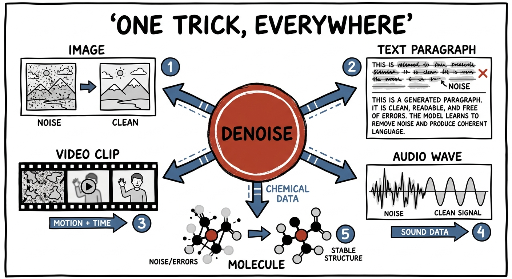
Sit with how strange this really is, because it's worth it. The most natural assumption in the world is that creating and destroying are opposites — that to build something you do the reverse of tearing it down. Diffusion quietly overturns that. Here, the only way the machine learns to create is by first learning, in exquisite gradual detail, how to destroy — and then running that destruction backward.
You cannot teach a machine to create from nothing. But you can teach it to undo a destruction you fully understand. So you destroy on purpose, carefully, reversibly — and creation falls out as destruction, played in reverse.
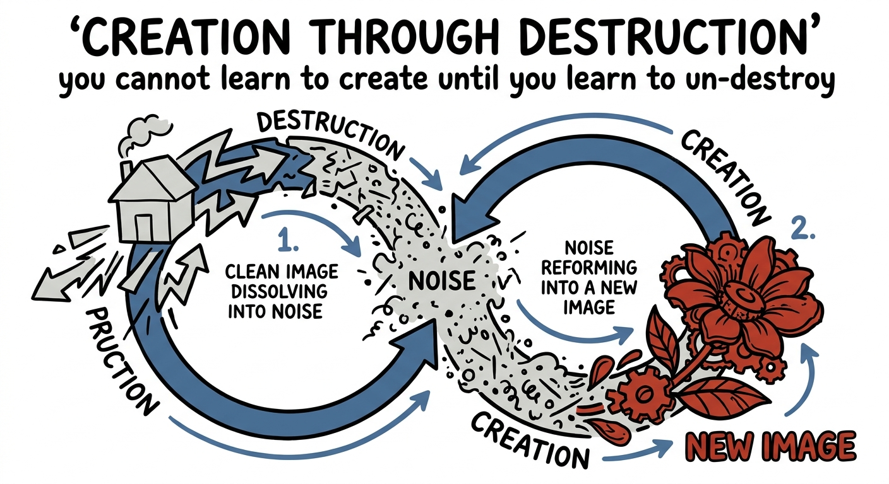
So here is the model to carry away. When you face a generation problem that feels impossibly hard to do in one go — make an image, write a passage, fold a protein — resist the urge to build it directly. Ask instead: can I define a gentle, reversible way to destroy the finished thing? Because if you can corrupt it step by step, you can train a model to walk those steps backward — and let the hard act of creation fall out as a long chain of easy, tiny reversals.
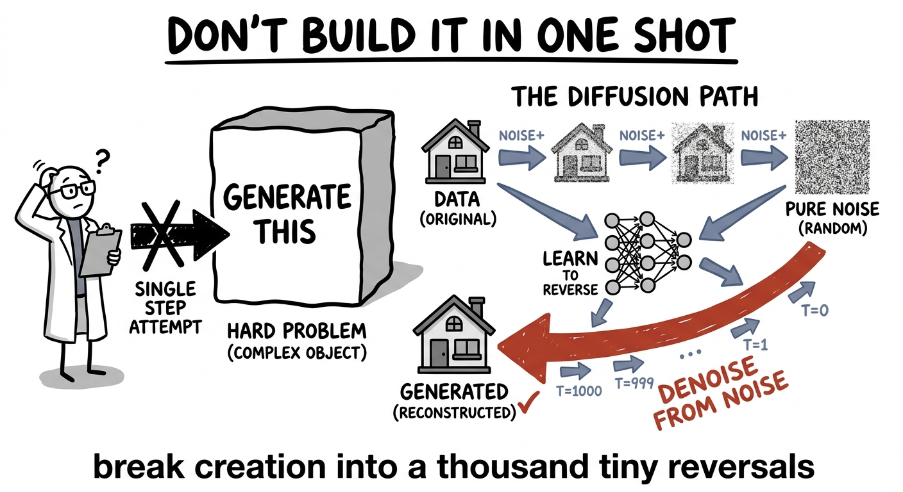
When creating something is too hard to do in one shot, define a gradual, reversible corruption of it instead — then train a model to undo a single step, and run that undo from pure noise. Images, language, video, molecules: creation, again and again, turns out to be destruction played backward.